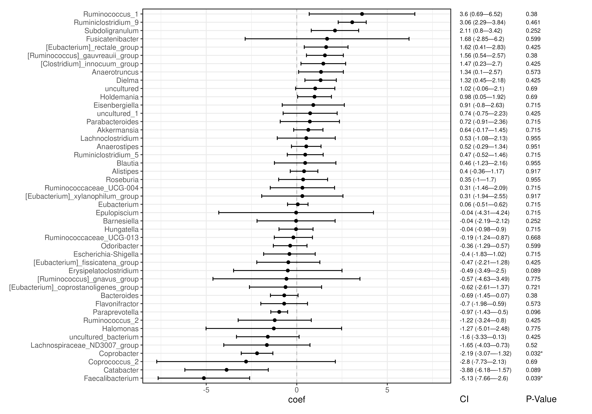
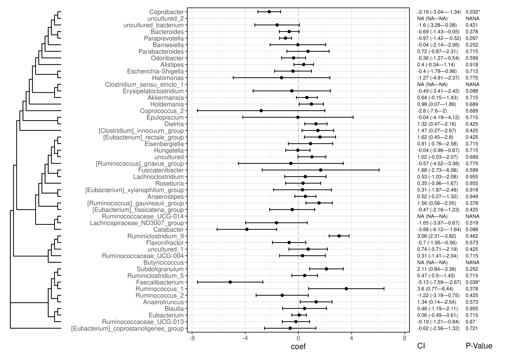
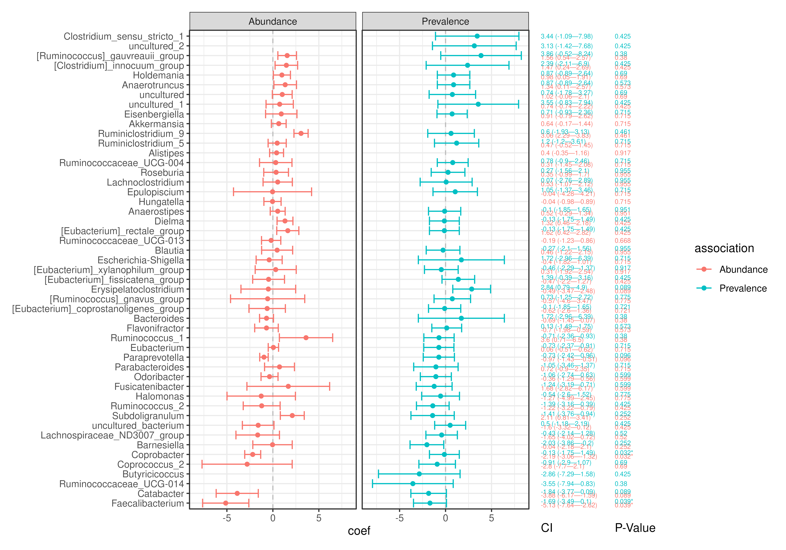

plotForest() creates a feature- or sample-wise forest plot, showing
estimated results from a statistical test with their confidence intervals.
Additionally, the plot can be enriched with the tree structure and labelled
with Confidence Intervals (CIs), p-values and other side information.
plotForest(x, ...)
# S4 method for class 'TreeSummarizedExperiment'
plotForest(
x,
by = 1L,
effect.var = "effect",
ci.lower.var = "lower",
ci.upper.var = "upper",
err.var = NULL,
pval.var = "pval",
id.var = "rownames",
label.by = NULL,
order.by = NULL,
facet.by = NULL,
color.by = colour.by,
colour.by = NULL,
conf.level = 0.95,
tree.name = "phylo",
show.tree = TRUE,
...
)
# S4 method for class 'SummarizedExperiment'
plotForest(
x,
by = 1L,
effect.var = "effect",
ci.lower.var = "lower",
ci.upper.var = "upper",
err.var = NULL,
pval.var = "pval",
id.var = "rownames",
label.by = NULL,
order.by = NULL,
facet.by = NULL,
color.by = colour.by,
colour.by = NULL,
conf.level = 0.95
)
# S4 method for class 'data.frame'
plotForest(
x,
effect.var = "effect",
ci.lower.var = "lower",
ci.upper.var = "upper",
err.var = NULL,
pval.var = "pval",
id.var = "rownames",
label.by = NULL,
order.by = NULL,
facet.by = NULL,
color.by = colour.by,
colour.by = NULL,
conf.level = 0.95
)a
SummarizedExperiment
object, or a data.frame object containing statistical estimates.
additional parameters passed to plotRowTree.
Character scalar. Determines whether features or samples
data is used for the plot. (Default: "rows")
Character scalar. Specifies the variable of x which
corresponds to the effects or estimated results. (Default: "effect")
Character scalar. Specifies the variable of x
which corresponds to the lower CI boundaries. (Default: "lower")
Character scalar. Specifies the variable of x
which corresponds to the upper CI boundaries. (Default: "upper")
Character scalar. Specifies the variable of x which
corresponds to the standard errors associated with effect.var.
When defined, it overwrites ci.lower.var and ci.upper.var.
(Default: "pval")
Character scalar. Specifies the variable of x which
corresponds to the p-values associated with effect.var.
(Default: "pval")
Character scalar. Specifies the variable of x which
corresponds to the observation identifiers. When "rownames"),
the object rownames are used. (Default: "rownames")
Character vector. Specifies the variables of x or
row/colData(x) by which the plot should be labelled. "CI" and
"P-Value" are special entries which require either effect.var,
ci.lower.var and ci.upper.var or pval.var to be
specified, respectively. (Default: NULL)
Character scalar. Specifies the variable of x by which
observations are ordered. If NULL, the observations are ordered by
the tree structure if available. (Default: NULL)
Character scalar. Specifies the variable of x by which
observations are divided into horizontal facets. (Default: NULL)
Character scalar. Alias to colour.by.
Character scalar. Specifies the variable of x by
which observations are coloured. (Default: NULL)
Numeric scalar. Specifies the confidence level of
the interval when inferred from err.var. It is ignored when
ci.lower.var and ci.upper.var are defined.
(Default: 0.95)
Character scalar. Specifies a row/colTree from x.
(Default: "phylo")
Logical scalar. Should the tree structure of the data
be shown next to the forest plot?
a ggplot object.
library(mia)
library(maaslin3)
# Import dataset
data("Tengeler2020", package = "mia")
tse <- Tengeler2020
# Agglomerate by genus and subset by prevalence
tse <- subsetByPrevalent(tse, rank = "Genus", prevalence = 10/100)
# Transform count assay to relative abundances
tse <- transformAssay(tse, assay.type = "counts", method = "relabundance")
# Run maaslin3
maaslin3_out <- maaslin3(
input_data = tse,
output = "maaslin_results",
formula = "~ patient_status",
)
#> 2026-02-22 17:01:24.595151 INFO::Writing function arguments to log file
#> 2026-02-22 17:01:24.614555 INFO::Verifying options selected are valid
#> 2026-02-22 17:01:24.615686 INFO::Determining format of input files
#> 2026-02-22 17:01:24.616259 INFO::Input format is data samples as rows and metadata samples as rows
#> 2026-02-22 17:01:24.618288 INFO::Running selected normalization method: TSS
#> 2026-02-22 17:01:24.620004 INFO::Creating output feature tables folder
#> 2026-02-22 17:01:24.620601 INFO::Writing normalized data to file maaslin_results/features/data_norm.tsv
#> 2026-02-22 17:01:24.622582 INFO::Filter data based on min abundance, min prevalence, and max prevalence
#> 2026-02-22 17:01:24.623144 INFO::Total samples in data: 27
#> 2026-02-22 17:01:24.623638 INFO::Min samples required with min abundance for a feature not to be filtered: 0.000000
#> 2026-02-22 17:01:24.624142 INFO::Max samples allowed with min abundance for a feature not to be filtered: 27.270000
#> 2026-02-22 17:01:24.62965 INFO::Total filtered features: 0
#> 2026-02-22 17:01:24.630319 INFO::Filtered feature names from abundance, min prevalence, and max prevalence filtering:
#> 2026-02-22 17:01:24.631574 INFO::Total features filtered by non-zero variance filtering: 0
#> 2026-02-22 17:01:24.632154 INFO::Filtered feature names from variance filtering:
#> 2026-02-22 17:01:24.632664 INFO::Writing filtered data to file maaslin_results/features/filtered_data.tsv
#> 2026-02-22 17:01:24.634256 INFO::Running selected transform method: LOG
#> 2026-02-22 17:01:24.635505 INFO::Writing normalized, filtered, transformed data to file maaslin_results/features/data_transformed.tsv
#> 2026-02-22 17:01:24.637384 INFO::Applying z-score to standardize continuous metadata
#> 2026-02-22 17:01:24.641106 INFO::Running the linear model component
#> 2026-02-22 17:01:24.653908 INFO::Fitting model to feature number 1, Akkermansia
#> 2026-02-22 17:01:24.658002 INFO::Fitting model to feature number 2, Alistipes
#> 2026-02-22 17:01:24.661038 INFO::Fitting model to feature number 3, Anaerostipes
#> 2026-02-22 17:01:24.664078 INFO::Fitting model to feature number 4, Anaerotruncus
#> 2026-02-22 17:01:24.667041 INFO::Fitting model to feature number 5, Bacteroides
#> 2026-02-22 17:01:24.669967 INFO::Fitting model to feature number 6, Barnesiella
#> 2026-02-22 17:01:24.672933 INFO::Fitting model to feature number 7, Blautia
#> 2026-02-22 17:01:24.675893 INFO::Fitting model to feature number 8, Butyricicoccus
#> 2026-02-22 17:01:24.677526 WARNING::Fitting problem for feature 8 returning NA
#> 2026-02-22 17:01:24.679171 INFO::Fitting model to feature number 9, Catabacter
#> 2026-02-22 17:01:24.68215 INFO::Fitting model to feature number 10, Clostridium_sensu_stricto_1
#> 2026-02-22 17:01:24.68386 INFO::Fitting model to feature number 11, Coprobacter
#> 2026-02-22 17:01:24.68676 INFO::Fitting model to feature number 12, Coprococcus_2
#> 2026-02-22 17:01:24.689654 INFO::Fitting model to feature number 13, Dielma
#> 2026-02-22 17:01:24.692545 INFO::Fitting model to feature number 14, Eisenbergiella
#> 2026-02-22 17:01:24.695502 INFO::Fitting model to feature number 15, Epulopiscium
#> 2026-02-22 17:01:24.698434 INFO::Fitting model to feature number 16, Erysipelatoclostridium
#> 2026-02-22 17:01:24.701315 INFO::Fitting model to feature number 17, Escherichia-Shigella
#> 2026-02-22 17:01:24.704215 INFO::Fitting model to feature number 18, Eubacterium
#> 2026-02-22 17:01:24.707095 INFO::Fitting model to feature number 19, Faecalibacterium
#> 2026-02-22 17:01:24.709997 INFO::Fitting model to feature number 20, Flavonifractor
#> 2026-02-22 17:01:24.712917 INFO::Fitting model to feature number 21, Fusicatenibacter
#> 2026-02-22 17:01:24.715818 INFO::Fitting model to feature number 22, Halomonas
#> 2026-02-22 17:01:24.718711 INFO::Fitting model to feature number 23, Holdemania
#> 2026-02-22 17:01:24.721603 INFO::Fitting model to feature number 24, Hungatella
#> 2026-02-22 17:01:24.724489 INFO::Fitting model to feature number 25, Lachnoclostridium
#> 2026-02-22 17:01:24.727395 INFO::Fitting model to feature number 26, Lachnospiraceae_ND3007_group
#> 2026-02-22 17:01:24.730292 INFO::Fitting model to feature number 27, Odoribacter
#> 2026-02-22 17:01:24.733193 INFO::Fitting model to feature number 28, Parabacteroides
#> 2026-02-22 17:01:24.736082 INFO::Fitting model to feature number 29, Paraprevotella
#> 2026-02-22 17:01:24.738966 INFO::Fitting model to feature number 30, Roseburia
#> 2026-02-22 17:01:24.74189 INFO::Fitting model to feature number 31, Ruminiclostridium_5
#> 2026-02-22 17:01:24.744914 INFO::Fitting model to feature number 32, Ruminiclostridium_9
#> 2026-02-22 17:01:24.747828 INFO::Fitting model to feature number 33, Ruminococcaceae_UCG-004
#> 2026-02-22 17:01:24.750726 INFO::Fitting model to feature number 34, Ruminococcaceae_UCG-013
#> 2026-02-22 17:01:24.753582 INFO::Fitting model to feature number 35, Ruminococcaceae_UCG-014
#> 2026-02-22 17:01:24.755154 WARNING::Fitting problem for feature 35 returning NA
#> 2026-02-22 17:01:24.756536 INFO::Fitting model to feature number 36, Ruminococcus_1
#> 2026-02-22 17:01:24.759443 INFO::Fitting model to feature number 37, Ruminococcus_2
#> 2026-02-22 17:01:24.762344 INFO::Fitting model to feature number 38, Subdoligranulum
#> 2026-02-22 17:01:24.765248 INFO::Fitting model to feature number 39, [Clostridium]_innocuum_group
#> 2026-02-22 17:01:24.768129 INFO::Fitting model to feature number 40, [Eubacterium]_coprostanoligenes_group
#> 2026-02-22 17:01:24.770996 INFO::Fitting model to feature number 41, [Eubacterium]_fissicatena_group
#> 2026-02-22 17:01:24.773872 INFO::Fitting model to feature number 42, [Eubacterium]_rectale_group
#> 2026-02-22 17:01:24.776745 INFO::Fitting model to feature number 43, [Eubacterium]_xylanophilum_group
#> 2026-02-22 17:01:24.779644 INFO::Fitting model to feature number 44, [Ruminococcus]_gauvreauii_group
#> 2026-02-22 17:01:24.782518 INFO::Fitting model to feature number 45, [Ruminococcus]_gnavus_group
#> 2026-02-22 17:01:24.785414 INFO::Fitting model to feature number 46, uncultured
#> 2026-02-22 17:01:24.788303 INFO::Fitting model to feature number 47, uncultured_1
#> 2026-02-22 17:01:24.791197 INFO::Fitting model to feature number 48, uncultured_2
#> 2026-02-22 17:01:24.792913 INFO::Fitting model to feature number 49, uncultured_bacterium
#> 2026-02-22 17:01:24.799202 INFO::Performing tests against medians
#> 2026-02-22 17:01:25.163072 INFO::Counting total values for each feature
#> 2026-02-22 17:01:25.165055 INFO::Running the logistic model component
#> 2026-02-22 17:01:25.174723 INFO::Fitting model to feature number 1, Akkermansia
#> 2026-02-22 17:01:25.176072 INFO::Fitting model to feature number 2, Alistipes
#> 2026-02-22 17:01:25.177289 INFO::Fitting model to feature number 3, Anaerostipes
#> 2026-02-22 17:01:25.182259 INFO::Fitting model to feature number 4, Anaerotruncus
#> 2026-02-22 17:01:25.186776 INFO::Fitting model to feature number 5, Bacteroides
#> 2026-02-22 17:01:25.19128 INFO::Fitting model to feature number 6, Barnesiella
#> 2026-02-22 17:01:25.19573 INFO::Fitting model to feature number 7, Blautia
#> 2026-02-22 17:01:25.200112 INFO::Fitting model to feature number 8, Butyricicoccus
#> 2026-02-22 17:01:25.204517 INFO::Fitting model to feature number 9, Catabacter
#> 2026-02-22 17:01:25.208801 INFO::Fitting model to feature number 10, Clostridium_sensu_stricto_1
#> 2026-02-22 17:01:25.213136 INFO::Fitting model to feature number 11, Coprobacter
#> 2026-02-22 17:01:25.217418 INFO::Fitting model to feature number 12, Coprococcus_2
#> 2026-02-22 17:01:25.221628 INFO::Fitting model to feature number 13, Dielma
#> 2026-02-22 17:01:25.225883 INFO::Fitting model to feature number 14, Eisenbergiella
#> 2026-02-22 17:01:25.230142 INFO::Fitting model to feature number 15, Epulopiscium
#> 2026-02-22 17:01:25.234422 INFO::Fitting model to feature number 16, Erysipelatoclostridium
#> 2026-02-22 17:01:25.238896 INFO::Fitting model to feature number 17, Escherichia-Shigella
#> 2026-02-22 17:01:25.24326 INFO::Fitting model to feature number 18, Eubacterium
#> 2026-02-22 17:01:25.247509 INFO::Fitting model to feature number 19, Faecalibacterium
#> 2026-02-22 17:01:25.251755 INFO::Fitting model to feature number 20, Flavonifractor
#> 2026-02-22 17:01:25.255943 INFO::Fitting model to feature number 21, Fusicatenibacter
#> 2026-02-22 17:01:25.260196 INFO::Fitting model to feature number 22, Halomonas
#> 2026-02-22 17:01:25.264441 INFO::Fitting model to feature number 23, Holdemania
#> 2026-02-22 17:01:25.268689 INFO::Fitting model to feature number 24, Hungatella
#> 2026-02-22 17:01:25.269883 INFO::Fitting model to feature number 25, Lachnoclostridium
#> 2026-02-22 17:01:25.274124 INFO::Fitting model to feature number 26, Lachnospiraceae_ND3007_group
#> 2026-02-22 17:01:25.278427 INFO::Fitting model to feature number 27, Odoribacter
#> 2026-02-22 17:01:25.282765 INFO::Fitting model to feature number 28, Parabacteroides
#> 2026-02-22 17:01:25.28715 INFO::Fitting model to feature number 29, Paraprevotella
#> 2026-02-22 17:01:25.291371 INFO::Fitting model to feature number 30, Roseburia
#> 2026-02-22 17:01:25.29561 INFO::Fitting model to feature number 31, Ruminiclostridium_5
#> 2026-02-22 17:01:25.299929 INFO::Fitting model to feature number 32, Ruminiclostridium_9
#> 2026-02-22 17:01:25.304332 INFO::Fitting model to feature number 33, Ruminococcaceae_UCG-004
#> 2026-02-22 17:01:25.308566 INFO::Fitting model to feature number 34, Ruminococcaceae_UCG-013
#> 2026-02-22 17:01:25.309764 INFO::Fitting model to feature number 35, Ruminococcaceae_UCG-014
#> 2026-02-22 17:01:25.31412 INFO::Fitting model to feature number 36, Ruminococcus_1
#> 2026-02-22 17:01:25.318422 INFO::Fitting model to feature number 37, Ruminococcus_2
#> 2026-02-22 17:01:25.322672 INFO::Fitting model to feature number 38, Subdoligranulum
#> 2026-02-22 17:01:25.326945 INFO::Fitting model to feature number 39, [Clostridium]_innocuum_group
#> 2026-02-22 17:01:25.33128 INFO::Fitting model to feature number 40, [Eubacterium]_coprostanoligenes_group
#> 2026-02-22 17:01:25.335547 INFO::Fitting model to feature number 41, [Eubacterium]_fissicatena_group
#> 2026-02-22 17:01:25.339758 INFO::Fitting model to feature number 42, [Eubacterium]_rectale_group
#> 2026-02-22 17:01:25.343925 INFO::Fitting model to feature number 43, [Eubacterium]_xylanophilum_group
#> 2026-02-22 17:01:25.348155 INFO::Fitting model to feature number 44, [Ruminococcus]_gauvreauii_group
#> 2026-02-22 17:01:25.352525 INFO::Fitting model to feature number 45, [Ruminococcus]_gnavus_group
#> 2026-02-22 17:01:25.356772 INFO::Fitting model to feature number 46, uncultured
#> 2026-02-22 17:01:25.361136 INFO::Fitting model to feature number 47, uncultured_1
#> 2026-02-22 17:01:25.36556 INFO::Fitting model to feature number 48, uncultured_2
#> 2026-02-22 17:01:25.369998 INFO::Fitting model to feature number 49, uncultured_bacterium
#> 2026-02-22 17:01:25.381268 INFO::Counting total values for each feature
#> 2026-02-22 17:01:25.383519 INFO::Re-running abundances for warn_prevalence
#> 2026-02-22 17:01:25.384124 INFO::Running selected normalization method: TSS
#> 2026-02-22 17:01:25.386083 INFO::Running selected transform method: LOG
#> 2026-02-22 17:01:25.395565 INFO::Fitting model to feature number 1, Akkermansia
#> 2026-02-22 17:01:25.398737 INFO::Fitting model to feature number 2, Alistipes
#> 2026-02-22 17:01:25.401685 INFO::Fitting model to feature number 3, Anaerostipes
#> 2026-02-22 17:01:25.40462 INFO::Fitting model to feature number 4, Anaerotruncus
#> 2026-02-22 17:01:25.407542 INFO::Fitting model to feature number 5, Bacteroides
#> 2026-02-22 17:01:25.410496 INFO::Fitting model to feature number 6, Barnesiella
#> 2026-02-22 17:01:25.41342 INFO::Fitting model to feature number 7, Blautia
#> 2026-02-22 17:01:25.416377 INFO::Fitting model to feature number 8, Butyricicoccus
#> 2026-02-22 17:01:25.417918 WARNING::Fitting problem for feature 8 returning NA
#> 2026-02-22 17:01:25.41935 INFO::Fitting model to feature number 9, Catabacter
#> 2026-02-22 17:01:25.422248 INFO::Fitting model to feature number 10, Clostridium_sensu_stricto_1
#> 2026-02-22 17:01:25.423973 INFO::Fitting model to feature number 11, Coprobacter
#> 2026-02-22 17:01:25.426856 INFO::Fitting model to feature number 12, Coprococcus_2
#> 2026-02-22 17:01:25.42978 INFO::Fitting model to feature number 13, Dielma
#> 2026-02-22 17:01:25.43266 INFO::Fitting model to feature number 14, Eisenbergiella
#> 2026-02-22 17:01:25.435567 INFO::Fitting model to feature number 15, Epulopiscium
#> 2026-02-22 17:01:25.438448 INFO::Fitting model to feature number 16, Erysipelatoclostridium
#> 2026-02-22 17:01:25.441321 INFO::Fitting model to feature number 17, Escherichia-Shigella
#> 2026-02-22 17:01:25.444213 INFO::Fitting model to feature number 18, Eubacterium
#> 2026-02-22 17:01:25.447106 INFO::Fitting model to feature number 19, Faecalibacterium
#> 2026-02-22 17:01:25.449994 INFO::Fitting model to feature number 20, Flavonifractor
#> 2026-02-22 17:01:25.452877 INFO::Fitting model to feature number 21, Fusicatenibacter
#> 2026-02-22 17:01:25.455834 INFO::Fitting model to feature number 22, Halomonas
#> 2026-02-22 17:01:25.458722 INFO::Fitting model to feature number 23, Holdemania
#> 2026-02-22 17:01:25.46169 INFO::Fitting model to feature number 24, Hungatella
#> 2026-02-22 17:01:25.46457 INFO::Fitting model to feature number 25, Lachnoclostridium
#> 2026-02-22 17:01:25.467512 INFO::Fitting model to feature number 26, Lachnospiraceae_ND3007_group
#> 2026-02-22 17:01:25.470414 INFO::Fitting model to feature number 27, Odoribacter
#> 2026-02-22 17:01:25.473319 INFO::Fitting model to feature number 28, Parabacteroides
#> 2026-02-22 17:01:25.476211 INFO::Fitting model to feature number 29, Paraprevotella
#> 2026-02-22 17:01:25.479192 INFO::Fitting model to feature number 30, Roseburia
#> 2026-02-22 17:01:25.482109 INFO::Fitting model to feature number 31, Ruminiclostridium_5
#> 2026-02-22 17:01:25.48508 INFO::Fitting model to feature number 32, Ruminiclostridium_9
#> 2026-02-22 17:01:25.488001 INFO::Fitting model to feature number 33, Ruminococcaceae_UCG-004
#> 2026-02-22 17:01:25.490896 INFO::Fitting model to feature number 34, Ruminococcaceae_UCG-013
#> 2026-02-22 17:01:25.493755 INFO::Fitting model to feature number 35, Ruminococcaceae_UCG-014
#> 2026-02-22 17:01:25.495355 WARNING::Fitting problem for feature 35 returning NA
#> 2026-02-22 17:01:25.496757 INFO::Fitting model to feature number 36, Ruminococcus_1
#> 2026-02-22 17:01:25.499699 INFO::Fitting model to feature number 37, Ruminococcus_2
#> 2026-02-22 17:01:25.502613 INFO::Fitting model to feature number 38, Subdoligranulum
#> 2026-02-22 17:01:25.505516 INFO::Fitting model to feature number 39, [Clostridium]_innocuum_group
#> 2026-02-22 17:01:25.508418 INFO::Fitting model to feature number 40, [Eubacterium]_coprostanoligenes_group
#> 2026-02-22 17:01:25.51132 INFO::Fitting model to feature number 41, [Eubacterium]_fissicatena_group
#> 2026-02-22 17:01:25.514242 INFO::Fitting model to feature number 42, [Eubacterium]_rectale_group
#> 2026-02-22 17:01:25.517178 INFO::Fitting model to feature number 43, [Eubacterium]_xylanophilum_group
#> 2026-02-22 17:01:25.520109 INFO::Fitting model to feature number 44, [Ruminococcus]_gauvreauii_group
#> 2026-02-22 17:01:25.523011 INFO::Fitting model to feature number 45, [Ruminococcus]_gnavus_group
#> 2026-02-22 17:01:25.525891 INFO::Fitting model to feature number 46, uncultured
#> 2026-02-22 17:01:25.528793 INFO::Fitting model to feature number 47, uncultured_1
#> 2026-02-22 17:01:25.531686 INFO::Fitting model to feature number 48, uncultured_2
#> 2026-02-22 17:01:25.533465 INFO::Fitting model to feature number 49, uncultured_bacterium
#> 2026-02-22 17:01:25.560138 INFO::Creating fits folder
#> 2026-02-22 17:01:25.56084 INFO::Writing residuals to file maaslin_results/fits/residuals_linear.rds
#> 2026-02-22 17:01:25.561808 INFO::Writing fitted values to file maaslin_results/fits/fitted_linear.rds
#> 2026-02-22 17:01:25.562676 INFO::Writing residuals to file maaslin_results/fits/residuals_logistic.rds
#> 2026-02-22 17:01:25.563694 INFO::Writing fitted values to file maaslin_results/fits/fitted_logistic.rds
#> 2026-02-22 17:01:25.565988 INFO::Writing all the results to file (ordered
#> by increasing individual q-values): maaslin_results/all_results.tsv
#> 2026-02-22 17:01:25.567516 INFO::Writing the significant results without errors (those which have joint q-values less than or equal to the threshold of 0.100000 ) to file (ordered by increasing individual q-values): maaslin_results/significant_results.tsv
#> 2026-02-22 17:01:25.568562 INFO::Creating output figures folder
#> 2026-02-22 17:01:25.569476 INFO::Writing summary plot of significant
#> results to file: maaslin_results/figures/summary_plot.pdf
#> 2026-02-22 17:01:26.739149 INFO::Writing association plots (one for each significant association) to output folder: maaslin_results/figures
#> 2026-02-22 17:01:26.740871 INFO::Plotting associations from most to least significant, grouped by metadata
#> 2026-02-22 17:01:26.744933 INFO::Creating box plot for categorical data (linear),
#> patient_status vs Coprobacter
#> 2026-02-22 17:01:26.806484 INFO::Creating box plot for categorical data (linear),
#> patient_status vs Faecalibacterium
#> 2026-02-22 17:01:26.890513 INFO::Creating tile plot for categorical data (logistic), patient_status vs Erysipelatoclostridium
# Retrieve abundance results
maaslin3_abund <- maaslin3_out$fit_data_abundance$results
maaslin3_abund <- maaslin3_abund[!is.na(maaslin3_abund$coef), ]
# Visualize abundance results
plotForest(
maaslin3_abund,
effect.var = "coef",
err.var = "stderr",
pval.var = "qval_joint",
id.var = "feature",
label.by = c("CI", "P-Value"),
order.by = "coef"
)

# Add abundance results to TreeSE rowData
rownames(maaslin3_abund) <- maaslin3_abund$feature
tax_order <- match(rownames(tse), rownames(maaslin3_abund))
rowData(tse) <- cbind(rowData(tse), maaslin3_abund[tax_order, ])
# Visualise abundance results with tree structure
plotForest(
tse,
effect.var = "coef",
err.var = "stderr",
pval.var = "qval_joint",
label.by = c("CI", "P-Value")
)
#> Warning: `aes_string()` was deprecated in ggplot2 3.0.0.
#> ℹ Please use tidy evaluation idioms with `aes()`.
#> ℹ See also `vignette("ggplot2-in-packages")` for more information.
#> ℹ The deprecated feature was likely used in the miaViz package.
#> Please report the issue at <https://github.com/microbiome/miaViz/issues>.
#> Warning: Removed 4 rows containing missing values or values outside the scale range
#> (`geom_point()`).

# Retrieve prevalence results
maaslin3_prev <- maaslin3_out$fit_data_prevalence$results
maaslin3_prev <- maaslin3_prev[!is.na(maaslin3_prev$coef), ]
# Combine abundance and prevalence results
maaslin3_res <- rbind(maaslin3_abund, maaslin3_prev)
maaslin3_res$association <- c(
rep("Abundance", nrow(maaslin3_abund)),
rep("Prevalence", nrow(maaslin3_prev))
)
# Visualize combined results
plotForest(
maaslin3_res,
effect.var = "coef",
err.var = "stderr",
pval.var = "qval_joint",
id.var = "feature",
label.by = c("CI", "P-Value"),
order.by = "coef",
facet.by = "association",
colour.by = "association"
)
